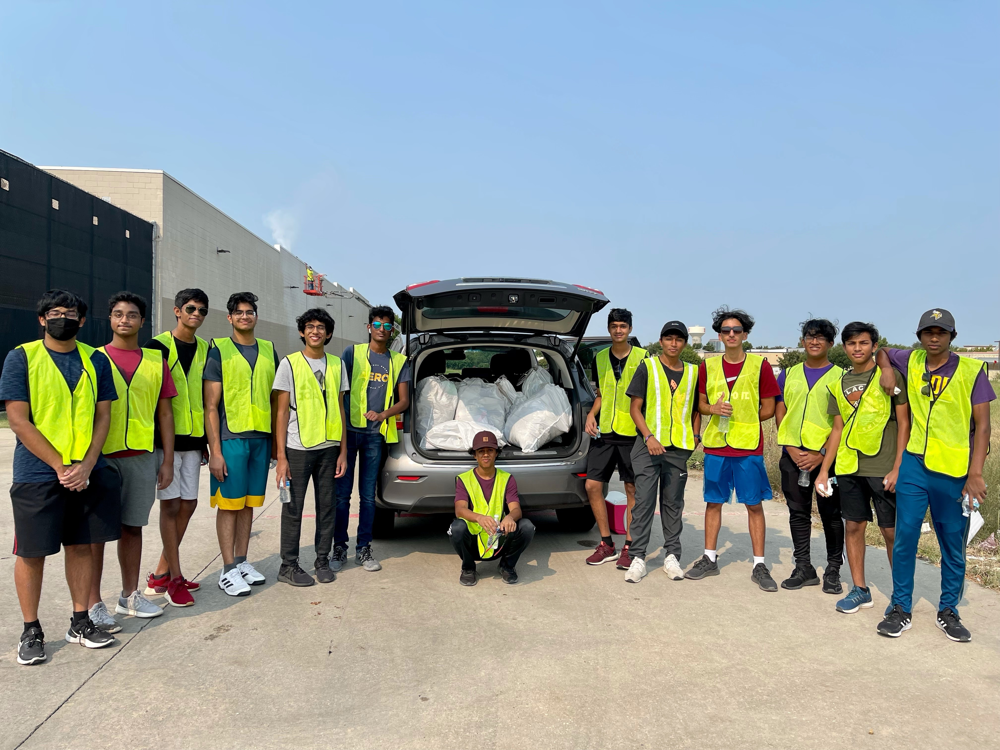

Street Sweep Initiative
Led a local effort in my hometown to organize monthly street cleanups, engaging over 20 volunteers and removing in excess of fifty bags of litter from Ohio Drive. This project fostered community pride and environmental stewardship, as well as serving as a way for students at my high school to earn volunteering hours.

Huntington Tutoring
Tutored four children in early-elementary level reading and math and SAT level math over the course of six months, twice a week. All my students made noticable improvements in grades, academic performance, and attention / focus. The students I tutored included those with special needs / learning disabilities.